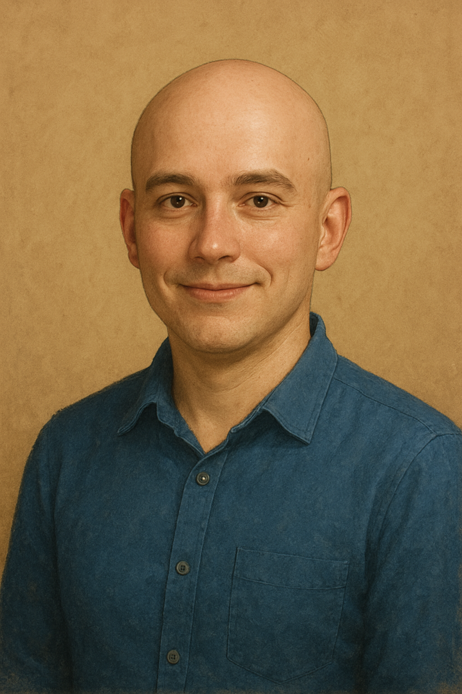

Portfolio
Tietoa minusta
Hei! Olen IT-tradenomiopiskelija Haaga-Heliasta, ja intohimoni on teknologia, ongelmanratkaisu sekä jatkuva uuden oppiminen. Opinnoissani olen perehtynyt laaja-alaisesti IT-alan keskeisiin osa-alueisiin, kuten ohjelmointiin, tietokantoihin, verkkoteknologioihin, kyberturvallisuuteen, käyttöliittymien ja käyttäjäkokemusten suunnitteluun sekä projektinhallintaan. Tämä monipuolinen osaaminen antaa minulle vahvan pohjan erilaisiin IT-tehtäviin, ja opin soveltamaan teoriaa käytännön projekteihin jo opiskeluaikana.
Olen kiinnostunut kaikesta teknisestä – oli kyseessä sitten ohjelmointi, laitteistot, mobiilisovellukset, verkkopalvelut tai uudet teknologiat. Vapaa-ajallani tutkin mielelläni uusia työkaluja ja tekniikoita, osallistun pieniin ohjelmointiprojekteihin ja ratkaisen älypelejä tai loogisia haasteita, jotka kehittävät ajattelukykyä ja ongelmanratkaisutaitoja. Nautin haasteista, jotka vaativat sekä luovaa että analyyttistä lähestymistapaa.
Opintojeni kautta olen oppinut työskentelemään sekä itsenäisesti että tiimissä, suunnittelemaan ja hallinnoimaan projekteja sekä viestimään teknisiä asioita selkeästi eri sidosryhmille. Olen tottunut käyttämään moderneja työkaluja ja ohjelmointikieliä, tutustumaan uusiin teknologioihin ja soveltamaan niitä käytännön ratkaisuissa. Uskon, että teknologian monipuolinen ymmärtäminen ja kyky soveltaa opittua nopeasti ovat vahvuuksiani työnantajan näkökulmasta.
Etsin mahdollisuuksia, joissa voin hyödyntää osaamistani, oppia uutta ja osallistua projekteihin, jotka haastavat minut kehittymään edelleen IT-alan ammattilaisena. Haluan löytää tehtäviä, joissa pääsen yhdistämään teknisen osaamisen, luovan ongelmanratkaisun ja projektityöskentelyn, ja jossa voin tuoda lisäarvoa tiimille sekä organisaatiolle.
Lyhyesti sanottuna, olen innokas, utelias ja monipuolisesti kiinnostunut IT-alan ammattilainen, joka nauttii uusien teknologioiden tutkimisesta, käytännön ongelmien ratkaisemisesta ja itsensä haastamisesta. Olen valmis tarttumaan erilaisiin haasteisiin, oppimaan jatkuvasti ja kehittämään osaamistani monipuolisesti.